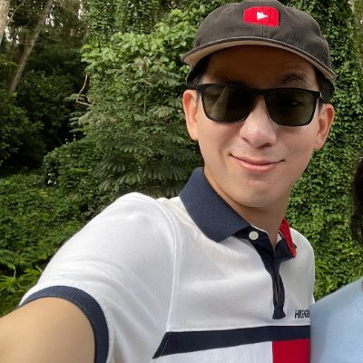

|
Jason Lee
I am currently a Principal Research Scientist at Salesforce AI Research, where I work on Large Language Models for Enterprise Solutions.
I started my professional career in the autonomous driving industry, training state-of-the-art object recognition models and shipping them to hundreds of thousands of customers at Tesla Autopilot. I then had a brief stint at the Office of the CTO at Cruise where I provided technical advice to the CTO/CEO, helping shape technical strategies and answer long-term strategic questions.
I obtained my Ph.D in Machine Learning from New York University, where I spent five delightful years training neural networks under the watchful eyes of Kyunghyun Cho. My Ph.D thesis focused on non-autoregressive generation of sequences using latent variable models and iterative refinement. During my studies, I was lucky to be supported by Qualcomm, where I was one of the first European Innovation Fellows.
I hold a BA and an MPhil from the University of Cambridge. I am originally from South Korea, and have lived in the UK, Poland and Switzerland before moving to the States.
Email |
Google Scholar |
Github |
LinkedIn
|

|